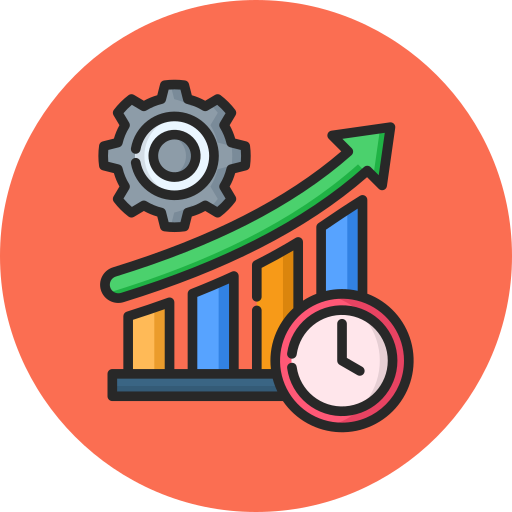

Task Manager
0% Completed
Daily Streak:
0
Pomodoro Focus Timer
Focus Time
25:00
“Productivity is not about doing more — it’s about doing what matters most.” This Productivity Tracker helps you organize your daily goals, stay focused using the Pomodoro technique, and build consistent habits one task at a time. Track progress, maintain streaks, and turn small efforts into meaningful achievements every single day.

0% Completed